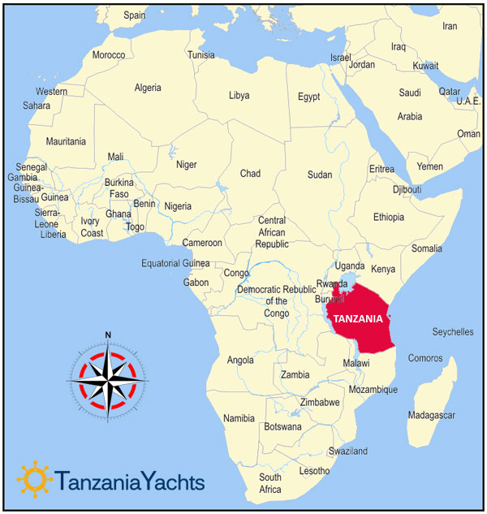
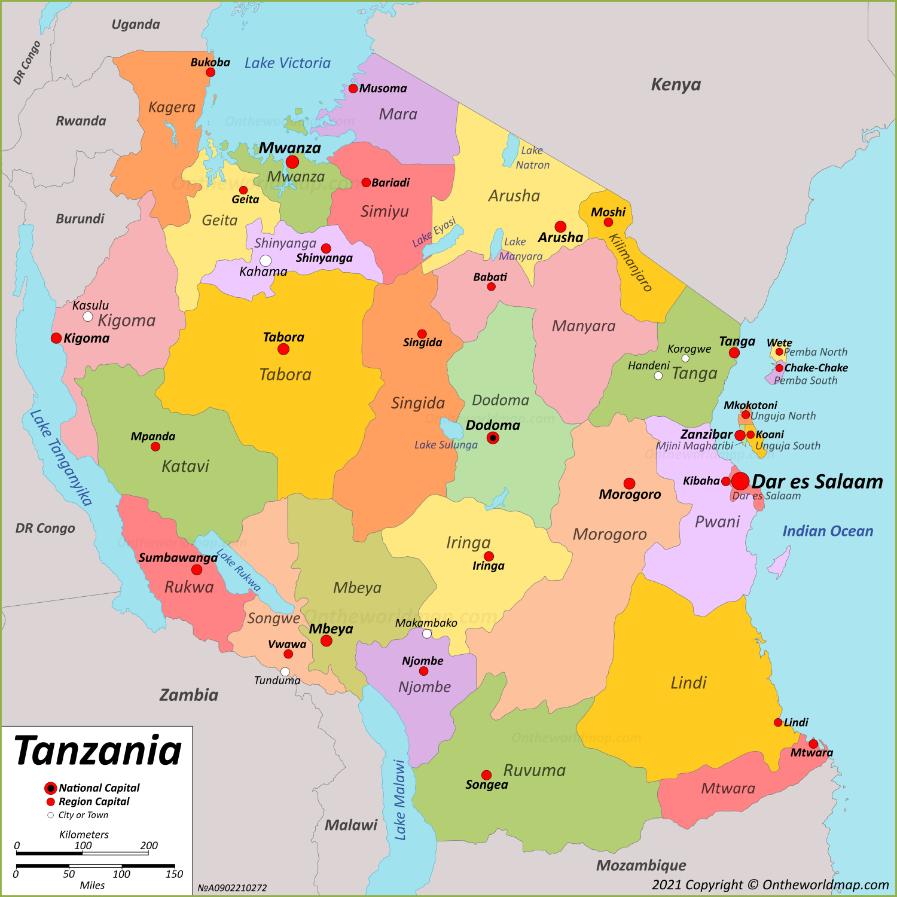
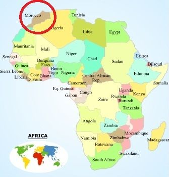
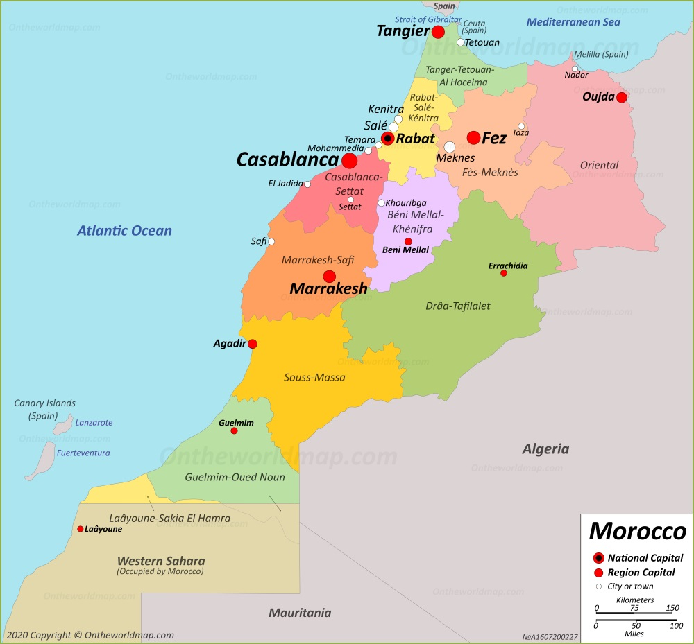

Continent with countries for Birdwatching
| Image | Desciption |
|---|---|
|   |
TANZANIATanzania is the largest country in East Africa and includes the islands of Zanzibar, Pemba, and Mafia. About twice the size of California, this African country is bordered by the Indian Ocean and eight countries: Kenya, Uganda, Rwanda, Burundi, Democratic Republic of Congo, Zambia, Malawi, and Mozambique. Tanzania is home to some of Africa's most famous national parks and natural attractions, including majestic Mount Kilimanjaro. Consequently, the most popular things to do in Tanzania and the reason many people visit the country, are the safaris and wildlife-related adventures. The best regions for Tanzania Birdwatching:
This is a list of the bird species recorded in Tanzania. The avifauna of Tanzania included a total of 1156 confirmed species as of September 2021. Of them, 34 are endemic, and four have been introduced by humans. One additional species is hypothetical as defined below; it and two proposed endemic species are not included in the counts.


|
|   |
MOROCCOMorocco is located in the northwest corner of Africa and is bordered by the North Atlantic Ocean and the Mediterranean Sea. Algeria and Western Sahara are the land borders to the south and east. Morocco is about the same size as California. The high Atlas Mountains separate the mild coastline from the harsh Sahara. Morocco is home to the world's largest desert known as the Sahara desert! In Africa, Morocco is the 25th largest country with a population of almost 34 million. Since its foundation, the country has been under the rule of a series of independent dynasties. Top sites visited for Birdwatching are: Oukaïmeden, Erg Chebbi, the Tagdilt track and Ouarzazate.
Our Morocco birding tour is designed for wildlife enthusiasts visiting Morocco for the first time.
The tour starts at the interesting city of Marrakech.
|